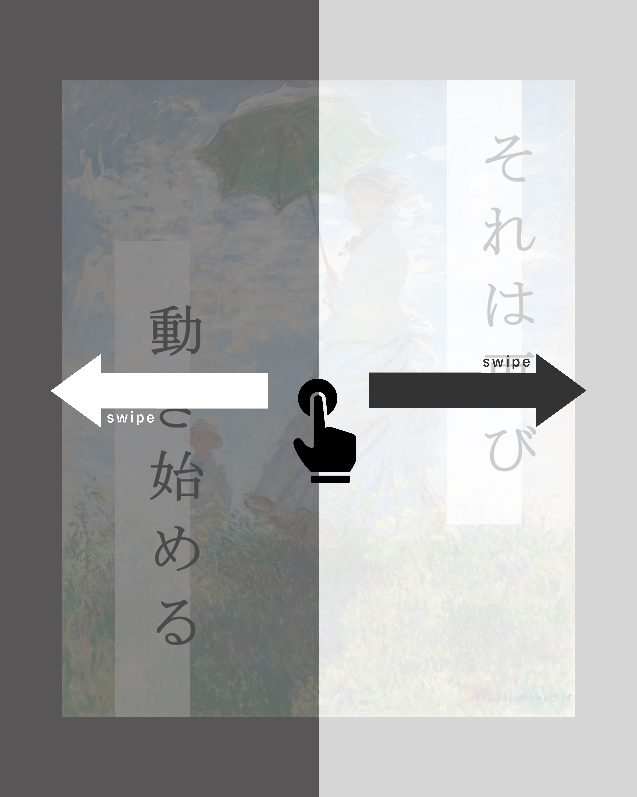
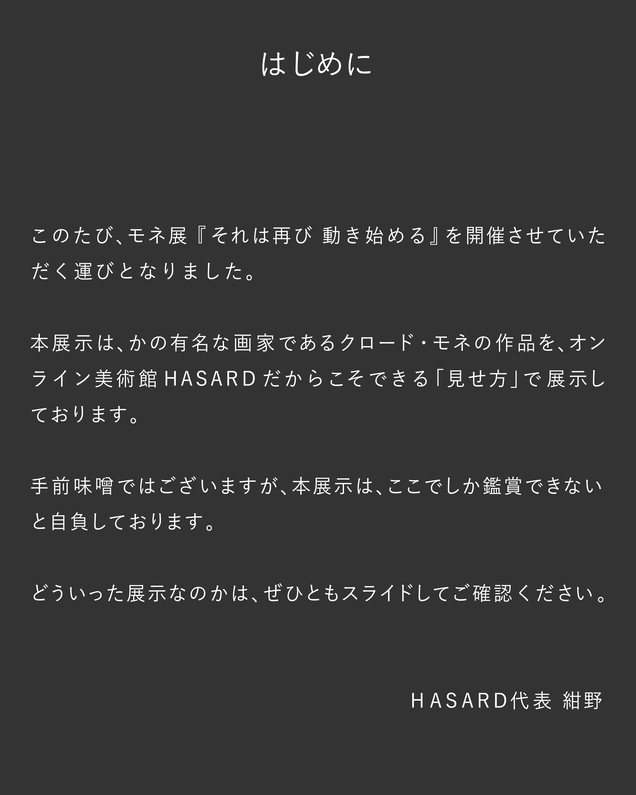
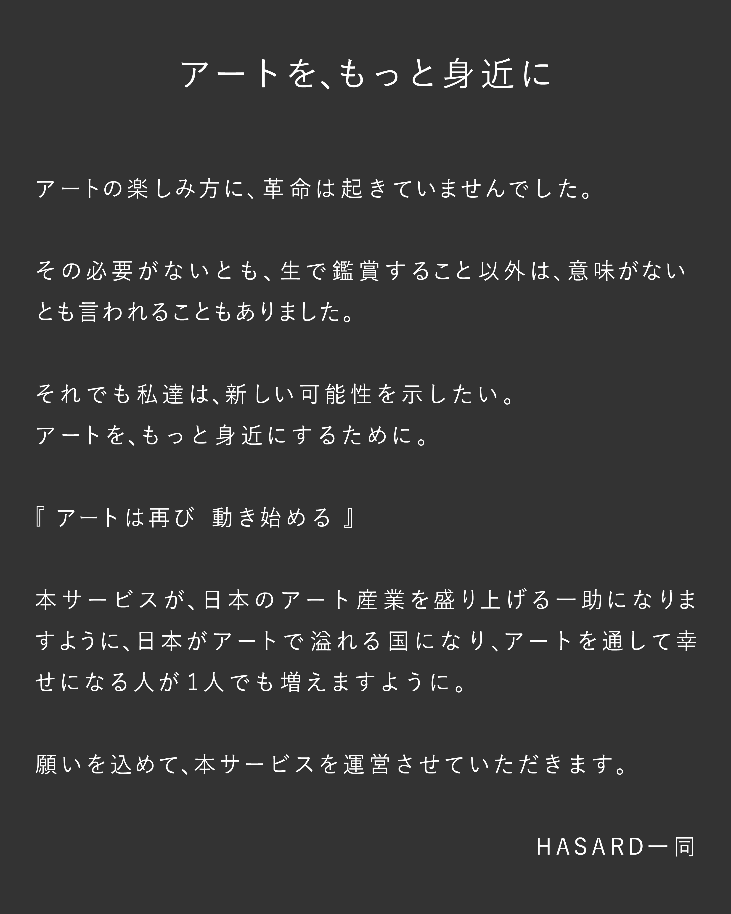

- 春 - 1872
- アルジャントゥイユのケシ畑 - 1873
- アルジャントゥイユの橋 - 1874
- 日傘をさす女性 - 1875
- サン=ラザール駅、ノルマンディー列車の到着 - 1877
- リンゴの木 - 1879
- 雪解け、ヴェタイユへの道 - 1880-81
- プールヴィルの断崖を歩く女性 - 1882
- マンヌポルト(エトルタ) - 1883
- ポートグルファー、ベルイルの岸壁 - 1886
- 日傘をさす女性 - 1886
- 日傘をさす女性 - 1886
- アンティーブの砦 - 1888
- 国会議事堂、日没 - 1903
- カナル・グランデ、ヴェネツィア - 1907

Please Scroll ▼


%E3%80%901883%E3%80%91.gif)

%E3%80%901886%E3%80%91.gif)
%E3%80%901886%E3%80%91.gif)